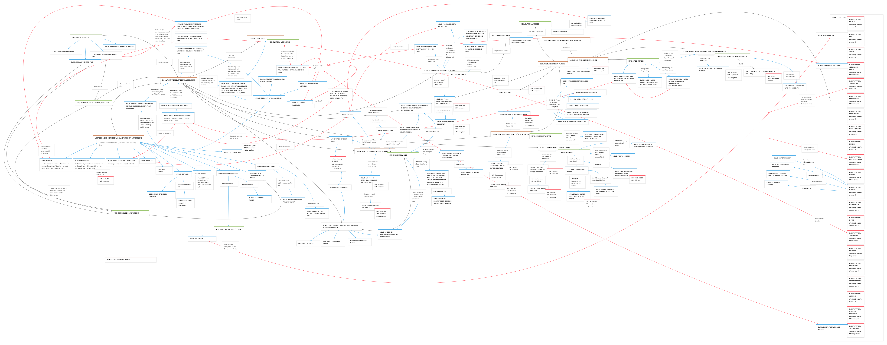

Impossible Landscapes
Consulta rápida para dirigir la campaña desde tu tablet, incluso sin conexión. La biblioteca personal se guarda únicamente en el dispositivo; contiene información reservada al Supervisor.
The Night Floors
Edificio Macallistar, desaparición de Abigail Wright, pistas y planos.
A Volume of Secret Faces
Dorchester House, la familia Samigina y el cuarto 616 del Boxer.
Hacia Carcosa
Índice completo, mapa de relaciones y notas privadas. Podrás importar más material desde la galería.
Archivo de evidencias
Atlas de localizaciones
Los planos del Macallistar están catalogados por piso. Los cuatro planos recibidos contienen datos que pueden revelar pistas; incluso la versión «menos anotaciones» conserva nombres y referencias. Por seguridad se clasifican como material del Supervisor.
Casos complementarios
Dos documentos de trabajo de Dennis Detwiller y el conjunto de ayudas oficiales. Abrilos con el visor PDF sin salir del archivo de consulta.
Cuaderno de campaña
Información guardada solamente en este dispositivo. No aparece en las ayudas de los jugadores. La Corrupción es secreta: nunca reveles estas cifras.
Primera operación en 1995 y segunda en 2015. Los saltos abren tu ejemplar local de 370 páginas. El índice íntegro sigue debajo.
Valores 0–10; el manual (p. 17 impresa) indica seguirlos en secreto. Ajustalos según la ficción y sus umbrales; no los confundas con SAN.
Notas privadas de preparación y seguimiento de sesión; se guardan automáticamente.
Mapa de relaciones aportado por el Supervisor. Deslizá para recorrerlo y elegí un zoom.

Material oficial, no incluido: paquete de ayudas de Arc Dream (54 páginas), STATIC Protocol y recursos de delta-green.com. Consultalos por separado, cuando tengas conexión.
Comunidad: mapas y material adicional en el foro r/DeltaGreenRPG (recursos no oficiales). Comprobá spoilers antes de distribuirlos.
La aplicación y el libro funcionan totalmente sin Internet. No descarga contenido externo ni reproduce material de pago.
Cómo usarlo · archivo PDF y comprobación de referencias
Guardá este HTML en la misma carpeta que Impossible_Landscapes_indice_enlazado.pdf. Abrí el HTML en tu navegador. La primera consulta abre una pestaña para el PDF. Las siguientes reutilizan esa pestaña y fuerzan la recarga en la página elegida, manteniendo abierto este índice. No requiere conexión a internet.
«PDF 72 · libro 70» significa la página 72 del archivo, numerada 70 en el libro. La correspondencia es página impresa + 2. Los 282 pies de página extraíbles coinciden con esa relación; el resto de las páginas conserva su posición física en la secuencia.
Referencia principal reproduce la distinción en negrita cursiva del índice original (descripción principal, tomo o estadísticas). «Otras menciones» conserva las referencias editoriales del libro: algunas solo son alusiones breves. Cada número de un intervalo tiene su propio enlace.
Los accesos de «Escenas y pistas» proceden de encabezados localizados en el texto. Los nombres se conservan en inglés para encontrarlos en el PDF, con equivalencias españolas en las entradas principales. «Secciones» incluye las 82 entradas de Contents y accesos adicionales de los marcadores del libro. Se corrigieron cuatro destinos de los marcadores contra el texto: Into “A Volume of Secret Faces”, Inside the Bookshop, Paths to the Whisper Labyrinth y The Clockwork Factory.
El salto a la página depende del visor de PDF del navegador. Si el visor ignora el salto, el botón muestra también el número físico que debés introducir. Este índice no usa la traducción condensada ni su numeración. Los resúmenes en español son ayudas de consulta para los nodos principales, no transcripciones completas; cada uno lleva sus propias páginas fuente. Las entradas sin resumen conservan todos sus enlaces originales.